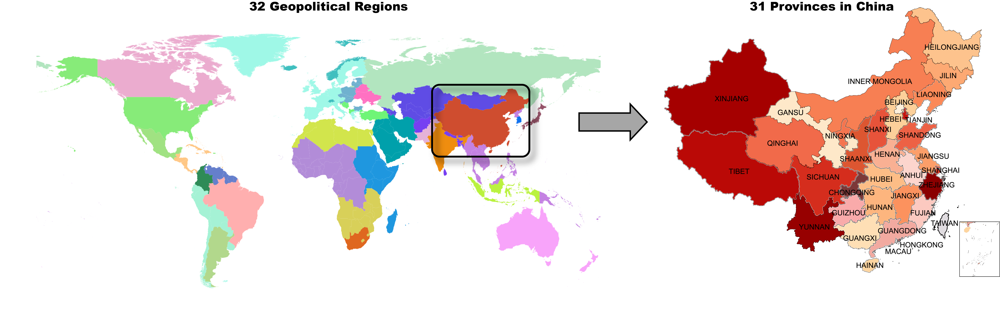

Overview
This documentation describes GCAM-China v8, which is developed based on the core Global Change Analysis Model version 8.2 (GCAM v8.2). GCAM is a multisector model developed and maintained at the Pacific Northwest National Laboratory’s Joint Global Change Research Institute (JGCRI, 2023). Both GCAM and GCAM-China are open-source community models. The documentation of the core GCAM is available at the GCAM documentation page jgcri.github.io/gcam-doc/ , and this GCAM-China manual serves as supplementary documentation of the distinctions of GCAM-China from the core GCAM. GCAM includes representations of: economy, energy, agriculture, and water supply in 32 geopolitical regions across the globe; their GHG and air pollutant emissions and global GHG concentrations, radiative forcing, and temperature change; and the associated land allocation, water use, and agriculture production across 384 land sub-regions and 235 water basins.
Reference:
- Joint Global Change Research Institute. (2025). GCAM Documentation (gcam-v8.2). Zenodo. https://zenodo.org/records/15581183
GCAM-China is a China-focused version of GCAM that disaggregates the energy-economic system of the China region into 31 province-level sub-regions and six electricity grid regions that are also embedded in the global GCAM model. Electricity generation and end-use energy demand (buildings, transportation, and industry) are modeled at the provincial level in GCAM-China, and the model allows for electricity trade within grid regions. Renewable energy resources (hydro, solar, and wind) and carbon storage resources are also provincial-specific. Primary production of fossil resources including oil, gas, and coal, as well as other energy transformation sectors (hydrogen, gas, and refined liquids production) are still modeled at the aggregate national level. Agricultural and land use activities, including the supply of biomass energy feedstocks (residues and dedicated energy crops) are modeled at the level of 12 water basins in China.

Updates from GCAM-China v7.1:
- Harmonized features with core GCAM v8.2
- Updated model base year from 2015 to 2021
- Added provincial non-CO2 emissions
- Added subnational water module
- Disaggregated coal power technologies by vintage (year of construction)
- Added provincial policy module (with example representation of nuclear power incentive policy)
GCAM-China is jointly developed and maintained by the Center for Global Sustainability at University of Maryland; the College of Environmental Sciences and Engineering at Peking University; the Institute of Carbon Neutrality at Peking University; the Department of Earth System Science, Tsinghua University; and the Institute for Carbon Neutrality, Tsinghua University.
Citation
In publications, please refer to the model as GCAM-China v(release
version number) and cite as shown on the Zenodo site, accessed by
clicking the DOI number button:
Get Started
Visit the GCAM-China repository: github.com/umd-cgs/gcam-china
Download the latest release for Windows or Mac from: github.com/umd-cgs/gcam-china/releases
Install the required prerequisite software (Java).
Run the model using:
Windows: exe/run-gcam.bat
Mac: exe/run-gcam.command
This runs GCAM-China using configuration.xml, which is initially a copy of configuration_china.xml.
After the model finishes running, output databases will be available in: output/database_basexdb
Open the model interface using:
Windows: ModelInterface/run-model-interface.bat
Mac: ModelInterface/ModelInterface.app
Two-letter abbreviations for sub-national regions and the power grid region to which each pertains is shown here: input/gcamdata/inst/extdata/gcam-china/province_names_mappings.csv
Notes on the queries:There is a GCAM China section at the bottom of the
Main_queries.xml file, which is displayed by the model
interface. This section contains some energy (primary energy,
electricity, refined liquids, and aggregated final energy), water, and
CO2 emissions queries which should be used instead of the corresponding
queries in the standard sections (e.g. energy). However,
most of the other queries should work for Chinese regions, and they
should work for regions outside of China.
Additionally, in order to get results for China as a whole, select
all of the provinces and power grid regions, as well as the
China region when running a query, and then sum up the
results. This is necessary, since the China region is often
the residual of the national value compared to the sum of the provincial
values.
GCAM-China Publications
Wang, H., Liu, Y., Wu, F., Dai, H., Duan, H., Guo, F., Hultman, N., Lu, X., McJeon, H., Miller, A., Tong, D., Yu, S., Yuan, W., Zhang, D., Cui, R., Zhang, Q., Ou, Y., 2026. Bridging China’s Climate Targets and Mitigation Capacity through Sectoral Policy Implementation. Environ. Sci. Technol. https://doi.org/10.1021/acs.est.5c11232
Yin, Z., Lu, X., Nielsen, C. P., Cui, R. Y., Ou, Y., Han, M., … & He, K. (2026). Mitigating inequity risks in China’s net-zero energy transition via an enhanced renewable-guided industrial spatial reconfiguration. The Innovation.
Lou, J., S. Yu., R. Cui, A. Miller, N. Hultman. “A Provincial Analysis on Wind and Solar Investment Needs towards China’s Carbon Neutrality.” Applied Energy 378 (January 15, 2025): 124841. https://doi.org/10.1016/j.apenergy.2024.124841
Dong, J., Li, S., Sun, Y., Gong, W., Song, G., Ding, Y., … & Gong, W. (2024). Provincial equity and enhanced health are key drivers for China’s 2060 carbon neutrality. Journal of Cleaner Production, 473, 143531.
Kim, H., Y. Qiu, H. McJeon, A. Clarens, P. Javadi, C. Wang, R. Wang, et al. “Provincial-Scale Assessment of Direct Air Capture to Meet China’s Climate Neutrality Goal under Limited Bioenergy Supply.” Environmental Research Letters 19, no. 11 (October 2024): 114021. https://doi.org/10.1088/1748-9326/ad77e7
Sun, Y., Jiang, Y., Xing, J., Ou, Y., Wang, S., Loughlin, D. H., … & Hao, J. (2024). Air quality, health, and equity benefits of carbon neutrality and clean air pathways in China. Environmental Science & Technology, 58(34), 15027-15037.
Yu S., J. Behrendt, A. Miller, Y. Liu, J. Adams, R. Cui, W. Li, H. Zhang, J. Cheng, D. Tong, J. Song, Q. Zhang, N. Hultman (2023). Co-benefits between Air Quality and Climate Policies in Guangdong and Shandong Provinces in China. Center for Global Sustainability, University of Maryland & Tsinghua University. 42 pp.
Cheng, J., Tong, D., Liu, Y., Geng, G., Davis, S. J., He, K., & Zhang, Q. (2023). A synergistic approach to air pollution control and carbon neutrality in China can avoid millions of premature deaths annually by 2060. One Earth, 6(8), 978-989.
Liu, Y., Tong, D., Cheng, J., Davis, S. J., Yu, S., Yarlagadda, B., … & Zhang, Q. (2022). Role of climate goals and clean-air policies on reducing future air pollution deaths in China: a modelling study. The Lancet Planetary Health, 6(2), e92-e99.
Cui, R.Y., Hultman, N., Cui, D. et al. A plant-by-plant strategy for high-ambition coal power phaseout in China. Nat Commun 12, 1468 (2021). https://doi.org/10.1038/s41467-021-21786-0
Cheng, J., Tong, D., Zhang, Q., Liu, Y., Lei, Y., Yan, G., … & He, K. (2021). Pathways of China’s PM2. 5 air quality 2015–2060 in the context of carbon neutrality. National Science Review, 8(12), nwab078.
Yu, S., Yarlagadda, B., Siegel, J. E., Zhou, S. & Kim, S. The role of nuclear in China’s energy future: insights from integrated assessment. Energy Policy 139, 111344 (2020).
Tong, D., Cheng, J., Liu, Y., Yu, S., Yan, L., Hong, C., … & Zhang, Q. (2020). Dynamic projection of anthropogenic emissions in China: methodology and 2015–2050 emission pathways under a range of socio-economic, climate policy, and pollution control scenarios. Atmospheric Chemistry and Physics, 20(9), 5729-5757.
Yu, S. et al. CCUS in China’s mitigation strategy: insights from integrated assessment modeling. Int. J. Greenh. Gas. Control 84, 204–218 (2019).
Advisory Committee

Community Contributors
| Profile | Name | Affiliation |
|---|---|---|
| ouyang363 | Yang Ou | 1,2 |
| thuliuyang | Yang Liu | 3,4 |
| andym331 | Andy Miller | 5 |
1 College of Environmental Sciences and Engineering
at Peking University
2 Institute of Carbon Neutrality at
Peking University
3 Department of Earth System Science,
Tsinghua University
4 Institute for Carbon Neutrality,
Tsinghua University
5 Center for Global Sustainability
at University of Maryland
Get Involved
This model is a collaborative, open-source model where we will follow these Community guidelines: Community Guidelines-Chinese or Community Guidelines-English . Your participation is welcome through the following process: clone or fork the umd-cgs/gcam-china repository, then make a branch with the new features and initiate a pull request and submit a core model proposal as specified in the umd-cgs/gcam-china/CONTRIBUTING.md document. This document outlines the process that groups can follow to propose the addition of new features to the model. Any issues / bugs / proposed features can be discussed through the Issues tab within the repository.
Contact Us: yang.ou@pku.edu.cn
Model Use Disclaimer
GCAM-China is an open-source research model intended for academic, educational, and policy analysis purposes.
Users should: - follow accepted academic and professional standards; - cite the specific GCAM-China release used, along with relevant methodological and application papers (e.g. Wang & Liu et al., 2026 ).
See the license here: umd-cgs/gcam-china/LICENSE.md .